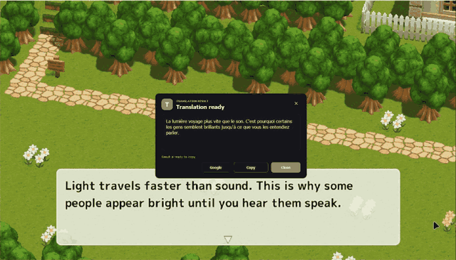
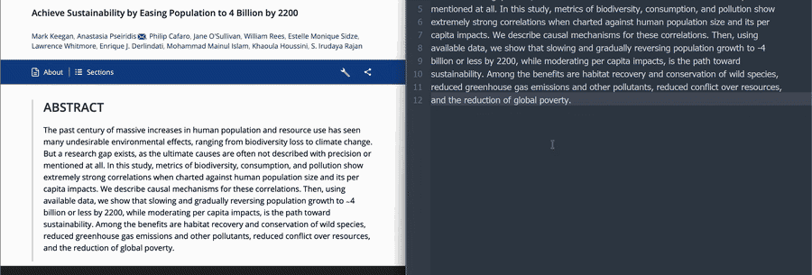
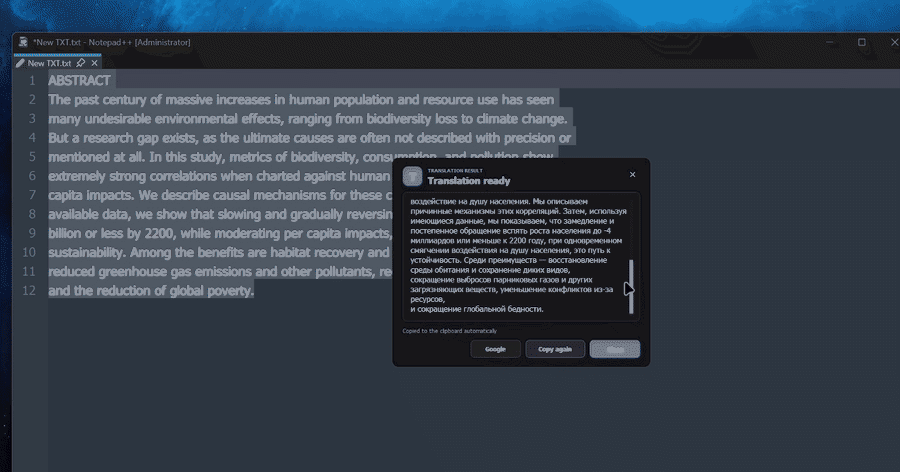
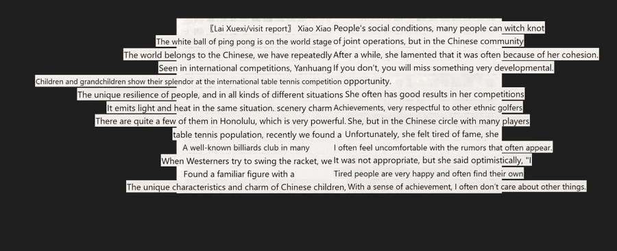
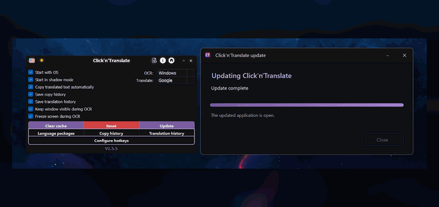

Dynamic translation
Select one or several regions. Unchanged frames are skipped; translated overlays update only when the source text changes.
Ctrl + Alt + GFree and open source · Windows & Linux
Copy text that cannot be selected. Translate a game, image, video, application, or document. One hotkey keeps you in the flow.
Latest: current release · No account · No ads · GPL-3.0

Real application recordings
Every animation below is captured from Click'n'Translate itself — no generated interface mockups.




One app, several jobs
Choose the result you need instead of moving the same screenshot through several utilities.
Select one or several regions. Unchanged frames are skipped; translated overlays update only when the source text changes.
Ctrl + Alt + GCopy text from images, videos, games, scans, and interfaces that block selection.
Ctrl + Alt + CTranslate one focused area or place translated text over the entire screen.
Ctrl + Alt + T / FTranslate a selection or replace it in the same application with the saved language pair.
Ctrl + Alt + QOpen common text, Word, PDF, HTML, and RTF files with original and translation side by side.
Ctrl + OYour screen, your route
Stylized fonts, scripts, scaling, and poor contrast behave differently. Install only the components you need.
Windows OCR · Tesseract · RapidOCR · EasyOCR
On deviceGoogle · MyMemory · Lingva · LibreTranslate
InternetArgos Translate · Hy-MT
On devicePrivacy without vague promises
OCR runs locally. Argos Translate and Hy-MT also translate locally after their packages are installed. If you choose an online provider, the text you request to translate is sent to that provider.
Copy and translation histories stay on your computer and are optional. The app includes no developer-operated analytics.
Read the privacy policy →Built in public
GPL-3.0Source, issues, and release history are public.
700+Automated checks in the current repository.
Safe reportsDiagnostics exclude clipboard text, documents, histories, credentials, and OCR logs.
Questions, answered
Yes, after installing the OCR language data and an Argos Translate or Hy-MT package for the direction you need. Online providers still require a connection.
Yes. OCR reads pixels from a selected region, so the source does not have to be selectable. Accuracy depends on the language, font, scale, contrast, and selected OCR engine.
Yes. The release page provides an x86_64 AppImage and a portable TAR archive. Screen capture integration may vary by desktop session.
Yes. Every global shortcut can be changed or cleared. OCR, full-screen, selection, replacement, and Dynamic translation remember their own language pair.
TXT, Markdown, DOCX, PDF, HTML, HTM, and RTF. Results can be saved as text, Markdown, or a reopenable local session.
See it. Select it. Understand it.